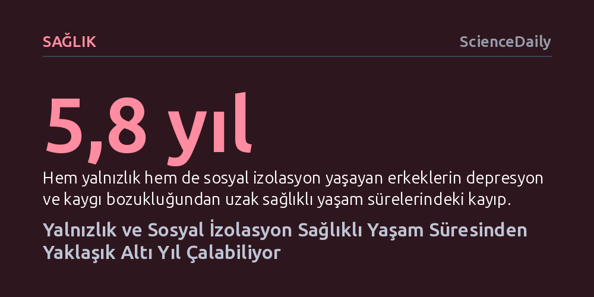

SAGLIK · ScienceDaily · 2026-10-11
Geniş kapsamlı yeni bir araştırma, hem yalnızlık hem de sosyal izolasyon yaşayan erkeklerin kaygı ve depresyonsuz geçen sağlıklı ömürlerinden yaklaşık 5,8 yıl, kadınların ise 3,7 yıl kaybettiğini gösteriyor. Üstelik sağlıklı yaşam alışkanlıkları sosyal izolasyonun etkilerini hafifletse de yalnızlığın getirdiği riskleri tek başına telafi edemiyor.
Yalnızlığı yalnızca geçici bir duygu durumu değil, sağlıklı beslenme ve sporla dahi telafi edilemeyen ve ömürden yıllar çalan somut bir halk sağlığı tehdidi olarak kavramamızı sağlıyor.

Tulane Üniversitesi araştırmacıları tarafından yürütülen ve Nature Communications dergisinde yayımlanan geniş kapsamlı yeni bir çalışma, yalnızlık ve sosyal izolasyonun insan ömründen ne kadar sağlıklı yıl çaldığını ilk kez somut rakamlarla ortaya koydu. Araştırma, bu iki faktörün özellikle zihinsel sağlık üzerinde sarsıcı bir tahribat yarattığını; depresyon ve anksiyeteden uzak geçirilen süreyi erkeklerde yaklaşık altı yıl, kadınlarda ise dört yıla yakın kısalttığını gösteriyor.
Günümüzde yetişkinlerin yaklaşık yarısı yalnızlık hissederken benzer oranda bir kesim de sosyal olarak izole bir yaşam sürüyor. Buna rağmen söz konusu iki olgu, diğer büyük risk faktörleriyle yarışacak düzeyde ölümcül sağlık sonuçları doğurmasına karşın, halk sağlığı politikalarında hâlâ yeterince önceliklendirilmeyen bir tehlike olarak kalmaya devam ediyor.
Günlük dilde çoğunlukla birbiri yerine kullanılan sosyal izolasyon ile yalnızlık, tıp ve epidemiyoloji açısından birbirinden çok farklı süreçlere işaret ediyor. Sosyal izolasyon, bireyin ailesiyle, arkadaşlarıyla veya çevresiyle kurduğu nesnel temasların ve bağların sayıca azlığını tanımlıyor. Yalnızlık ise etrafta ne kadar insan olursa olsun, kişinin kurduğu ilişkilerin niteliğinden memnun olmaması ve hissettiği öznel duygusal kopukluk anlamına geliyor.
Araştırma ekibi bu iki durumun etkilerini ayrıştırmak amacıyla, başlangıçta kalp hastalığı, diyabet, kanser, akciğer hastalığı, demans, depresyon ve anksiyete gibi yedi temel kronik rahatsızlığı bulunmayan 40 ila 69 yaş arası 277.489 yetişkinin verilerini analiz etti. 50 yaşını referans kabul eden araştırmacılar, katılımcıların bu hastalıklardan ari biçimde ne kadar süre yaşayabileceklerini modelledi.
Araştırmanın sonuçları, yalnızlık ve izolasyonun getirdiği yükün cinsiyetlere göre belirgin biçimde farklılaştığını ortaya koydu. Hem yalnızlık hem de sosyal izolasyon yaşayan kadınlar, fiziksel hastalıklardan uzak 2,4 yıl kaybederken erkeklerde bu kayıp 1,7 yıl seviyesinde kaldı. Ancak konu zihinsel sağlığa geldiğinde tablo tersine döndü: Erkekler depresyon ve kaygı bozukluğundan ari ömürlerinden tam 5,8 yıl kaybederken, kadınlardaki kayıp 3,7 yıl olarak hesaplandı.
Araştırmanın başyazarı Lu Qi, bu ayrımın cinsiyetlere özgü biyolojik ve psikososyal dinamiklerden kaynaklandığını vurgulayarak erkeklerin yalnızlığın getirdiği yıpratıcı etkilere karşı psikolojik olarak çok daha savunmasız olduğunu belirtiyor. Kadınların genel yaşam süresi beklentisinin daha yüksek olması ve belirli hastalıklara karşı koruyucu avantajlara sahip olması da bu tablonun şekillenmesinde rol oynuyor.
Çalışmanın en dikkat çekici bulgularından biri, yaşam tarzı tercihlerinin bu kayıpları ne ölçüde telafi edebildiği incelendiğinde ortaya çıktı. Düzenli egzersiz, dengeli beslenme, yeterli uyku ve sigara kullanmama gibi sağlıklı alışkanlıklar, sosyal izolasyonun yol açtığı sağlıklı ömür kaybını ölçülebilir düzeyde telafi edebiliyor. Yani çevresiyle az görüşen ancak kendine fiziksel olarak iyi bakan bireyler, izolasyonun zararlarını hafifletebiliyor.
Fakat aynı koruyucu kalkan yalnızlık için geçerli olmuyor. Araştırmacılar, sağlıklı bir yaşam tarzının bireyin hissettiği içsel yalnızlığın yarattığı ek sağlık risklerini anlamlı biçimde azaltamadığını tespit etti. Çalışmanın başyazarı Lu Qi'nin ifadesiyle, "Genel olarak çalışma, sosyal izolasyon ve yalnızlığın hastalıksız yaşam beklentisi üzerinde kayda değer bir etkiye sahip olduğunu ortaya koydu." Bu durum, toplum sağlığını korumak için fiziksel alışkanlıkları teşvik etmenin ötesine geçilmesi ve yalnızlıkla mücadelede öznel ilişki kalitesini hedefleyen özgün stratejiler geliştirilmesi gerektiğini gösteriyor.